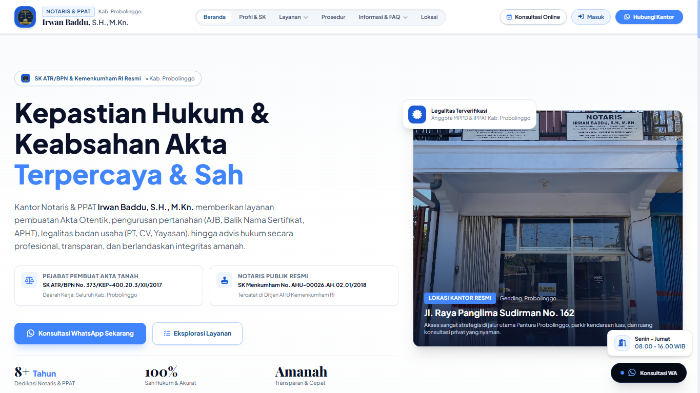
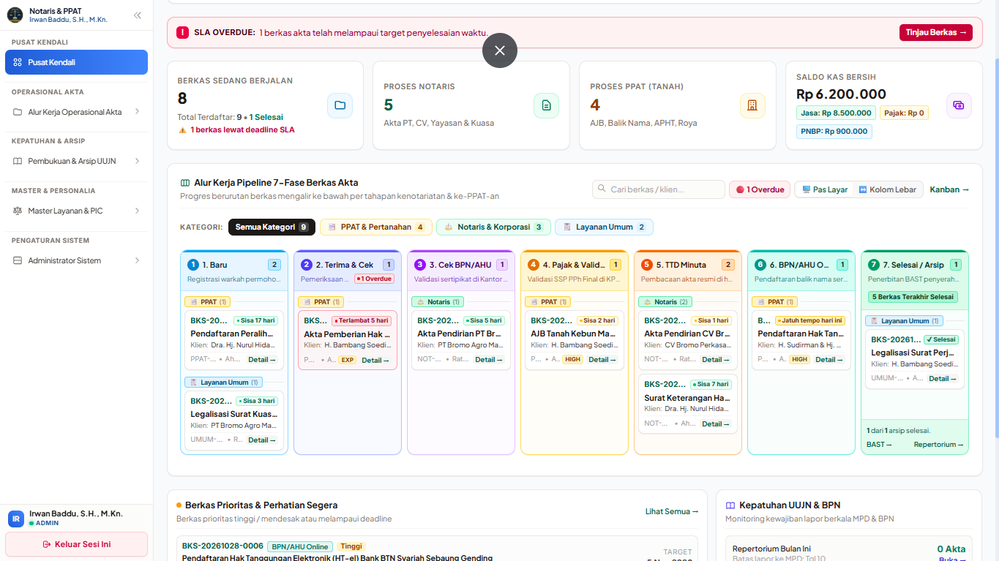

Live Production System
Kantor Notaris & PPAT Irwan Baddu
Sistem Operasional Kantor Notaris & PPAT (Akta 7 Tahap & Rekening Titipan Pajak)
Laravel 13 • Svelte 5
// Mode Inspeksi:

Lihat Screenshot Antarmuka Akta
Sistem Siklus Akta 7 Tahap

Lihat Dashboard Pajak & NTPN
Rekening Titipan Pajak & NTPN
Tantangan & Solusi Rekayasa
Membangun platform operasional kantor notaris berbasis Laravel 13 dan antarmuka modern Svelte 5 (Runes). Merancang otomasi alur akta 7 tahap (berkas masuk, cek sertifikat BPN, pembuatan draf, penandatanganan, validasi pajak dengan kode NTPN, pelaporan repertorium, hingga penyerahan). Mengatasi risiko pencampuran kas kantor dengan rekening titipan pajak negara (PPh & BPHTB) melalui modul pemisahan rekening kas yang diaudit secara terpisah.
Dampak Terukur
- Otomasi buku repertorium 100% akurat
- Audit titipan pajak negara zero-selisih
- Waktu penyiapan draf akta tereduksi 60%
Laravel 13
Svelte 5 (Runes)
Tailwind CSS v4
MySQL 3NF
NTPN Validation
Sistem Internal Notaris (Private Client)